Пять локальных движков и клон по короткому образцу
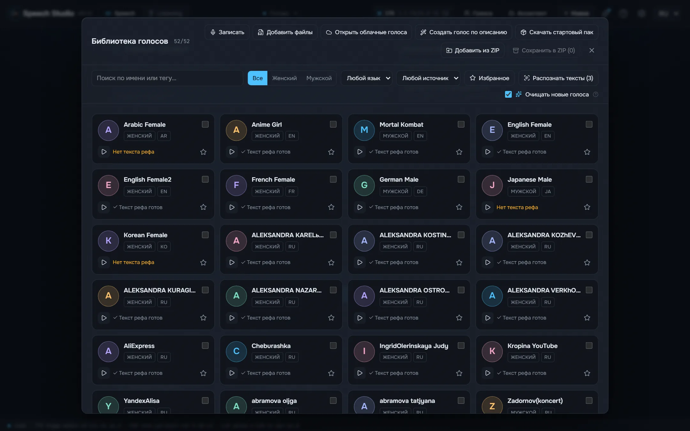
Higgs Audio v3, Fish Audio Drama 3, Supertonic 3, Qwen3-TTS и Qwen3-TTS с русскими ударениями работают на вашей видеокарте.
Десктопная студия: озвучивает текст пятью локальными движками и превращает записи обратно в текст с говорящими.
Windows · macOS (Apple silicon) · Linux AppImage · Linux .deb
Windows 10/11 x64 и видеокарта NVIDIA с 8 ГБ видеопамяти; macOS 13 на Apple silicon и Linux x86-64 — экспериментальные сборки. Модели и движки скачиваются из самой студии, когда вы решите.
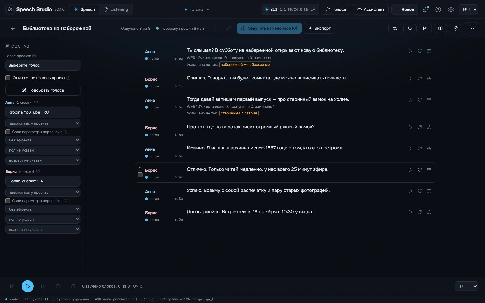
Supertonic 3 и Qwen3-TTS ставят русские ударения наугад. Студия расставляет их до того, как текст попадёт в движок: RUAccent по предложению выбирает замо́к или за́мок, му́ки или муки́, а числа, даты и единицы пишет словами в нужном падеже.
Старинный замок стоял на холме, а дверь в него запирали на тяжёлый замок. Из этой муки пекут хлеб, но для пекаря это настоящие муки.
Мы долго стояли у берега и смотрели, как белки прыгают по веткам. В яйце много белка, а в этой задаче много лишних белков.
Сделаны на этом компьютере студией как она есть, каждый дубль проверен на слух и выгружен так, как его сохранила студия. Все движки читают один и тот же текст.
Я помню чудное мгновенье — передо мной явилась ты, как мимолётное виденье, как гений чистой красоты.
Встреча 12.03 в 18:30, билет стоит 150 руб., а на улице −5 °C.
Голоса известных людей — синтез: клон по короткому образцу из пака голосов студии, а не запись этих людей. Стихи — общественное достояние.
Замер на RTX 4090 под Windows 11 в Speech Studio 0.2.0 как она ставится: один и тот же русский текст на 17 секунд, второй прогон каждого движка, модель уже загружена; Higgs — в движке audio.cpp 22.10, три прогона, первый звук не замерен. Первый звук — время до начала звука в окне; видеопамять — пик во время озвучки.
| Движок | Для чего | Быстрее реального времени | Первый звук | Поток | Скачать | Видеопамять |
|---|---|---|---|---|---|---|
| Supertonic 3 | Самый быстрый, готовые голоса без клона | 168× | 103 мс | По фразам | 0,1 ГБ | 1,0 ГБ |
| Qwen3-TTS | Быстрый, готовые голоса и клон | 12× | 19 мс | По ходу речи | 2,2 ГБ | 3,1 ГБ |
| Qwen3-TTS + ru stress LoRA | Русский с верными ударениями, клон | 10× | 26 мс | По ходу речи | 2,3 ГБ | 3,5 ГБ |
| Fish Audio Drama 3 | Лучшая игра и качество, клон; от 6 ГБ видеопамяти | 7,0× | 326 мс | По ходу речи | 21,4 ГБ | 21,9 ГБ |
| Higgs Audio v3 | Эмоции и звуки тегами, клон | 3,4× | — | По ходу речи | 5,3 ГБ | ~7,0 ГБ |
Замер на том же компьютере в Speech Studio 0.2.1 как она ставится: одна русская запись одного говорящего на 5 минут распознаётся в Listening без разделения по говорящим, загрузка модели входит; CrisperWhisper — в движке audio.cpp 22.10, русская запись на 625,8 с, на процессоре и по видеопамяти не замерен. × — во сколько раз быстрее, чем звучит запись; видеопамять — пик во время задачи, после задачи модель её освобождает.
| Модель | Для чего | На видеокарте | На процессоре | Языки | Скачать | Видеопамять |
|---|---|---|---|---|---|---|
| Parakeet TDT v3 | Быстрая и точная, язык определяет сама | 96× | 33× | 25 | 0,7 ГБ | 1,2 ГБ |
| Parakeet Ultra | Parakeet, дообученный Moondream: меньше ошибок распознавания | 73× | 33× | 25 | 0,7 ГБ | 1,0 ГБ |
| Nemotron 3.5 | Язык задаётся, поэтому без случайных слов на другом языке | 73× | 29× | 28 | 0,7 ГБ | 1,0 ГБ |
| CrisperWhisper 2.0 turbo | Больше всего языков | 96× | — | 99 | 1,6 ГБ | — |
Каждый шаг одного хода разговора, замер на том же компьютере. Дольше всего думает сам агент — это зависит от агента и его модели.
| Ваша фраза текстом после того, как вы замолчали (Parakeet на видеокарте, пауза конца фразы входит) | 641 мс – 735 мс |
| Агент пишет ответ (Claude Sonnet, замер) | 2,0 с – 3,9 с |
| Первый звук ответа (по движкам, см. выше) | 19 мс – 1,0 с |

Higgs Audio v3, Fish Audio Drama 3, Supertonic 3, Qwen3-TTS и Qwen3-TTS с русскими ударениями работают на вашей видеокарте.
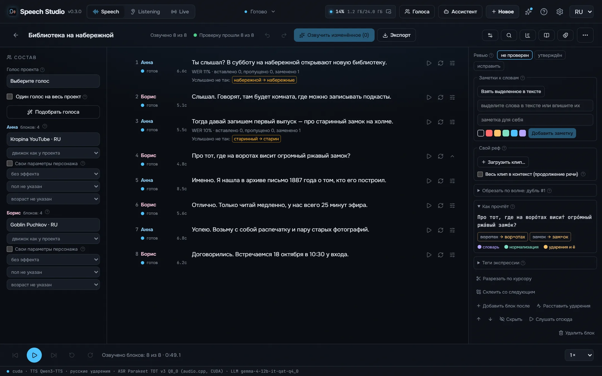
Числа в нужном падеже и роде, даты, время, деньги и единицы пишутся словами до того, как движок их прочтёт.
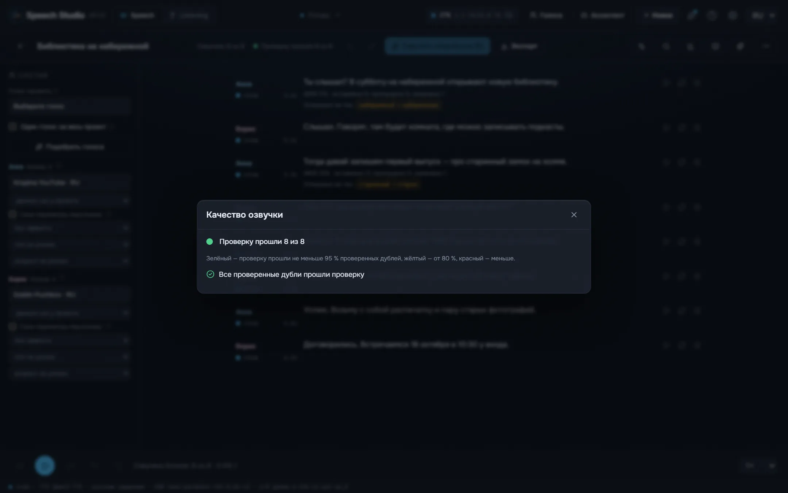
Каждый дубль распознаётся обратно и сверяется с текстом по словам, плюс проверки на перегруз, тишину, обрыв, щелчок, повтор фразы и шум вместо речи.
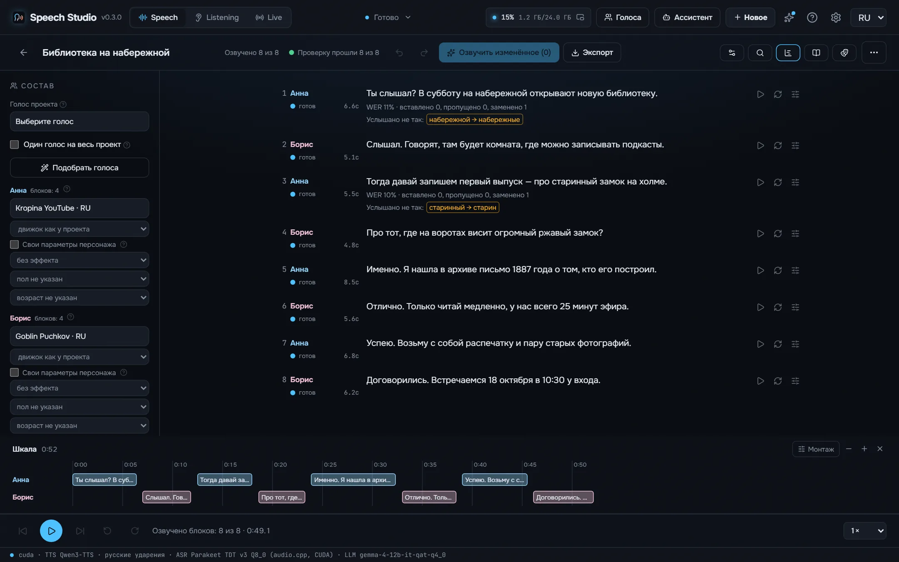
Строки «Анна:» и «[Анна]» становятся персонажами со своими голосами, режиссёр пишет подкаст на тему для нескольких голосов, а таймлайн показывает каждое наложение.
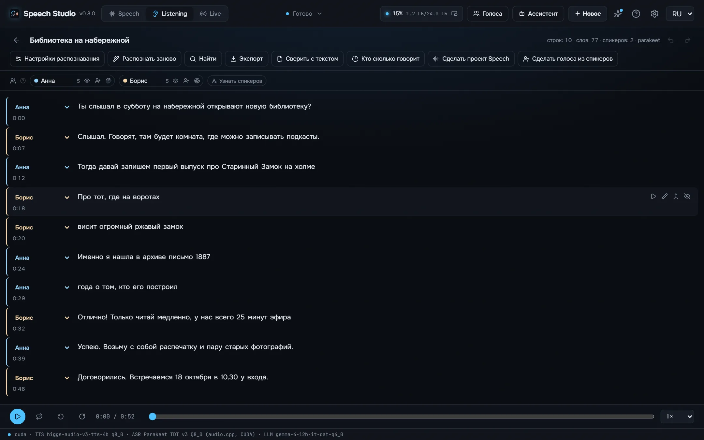
Запись, видео или ссылка превращаются в текст с тем, кто что сказал и когда: Parakeet-TDT, Nemotron 3.5 или CrisperWhisper, до восьми говорящих, плеер-караоке, монтаж по тексту и выгрузка в SRT, VTT, ASS, TXT или JSON.
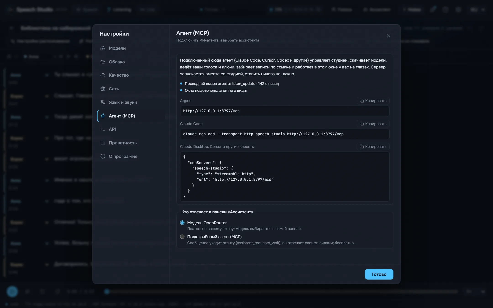
Пока студия открыта, агент вроде Claude Code или Cursor делает через MCP всё, что умеет окно: озвучивает текст в файл, правит проекты, раздаёт голоса, распознаёт и проверяет записи.
Сама студия — на вашем языке.
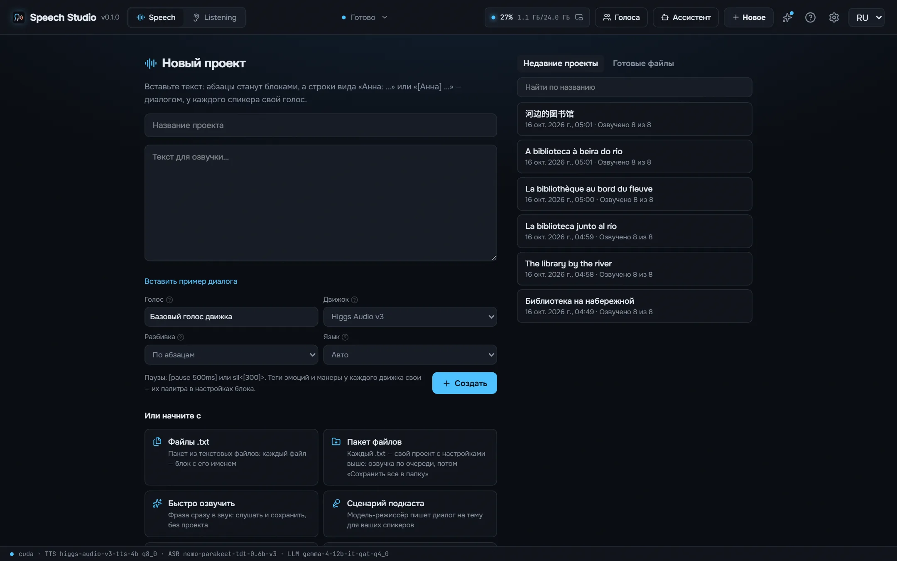
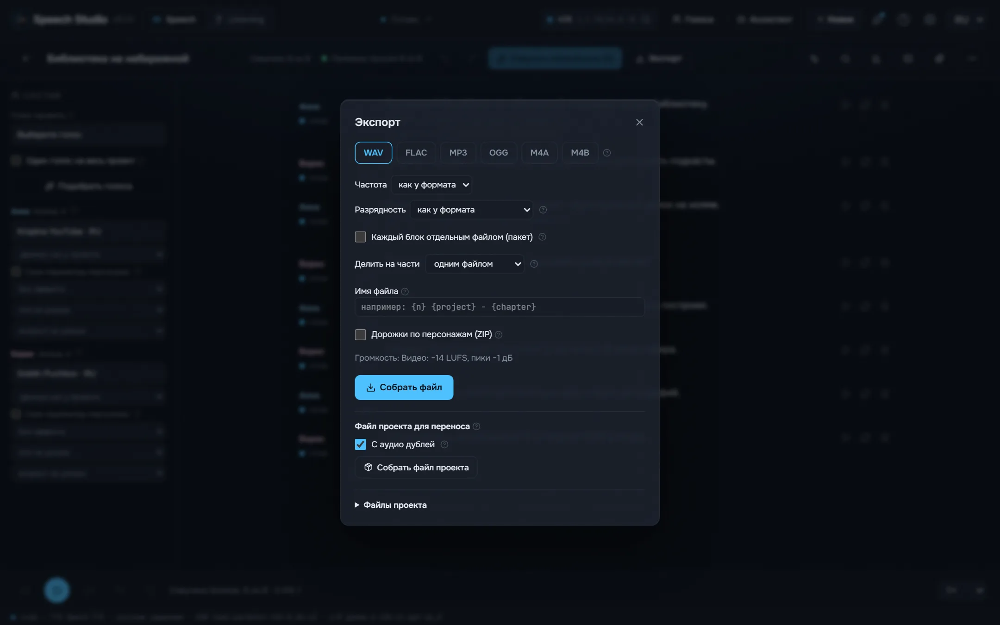
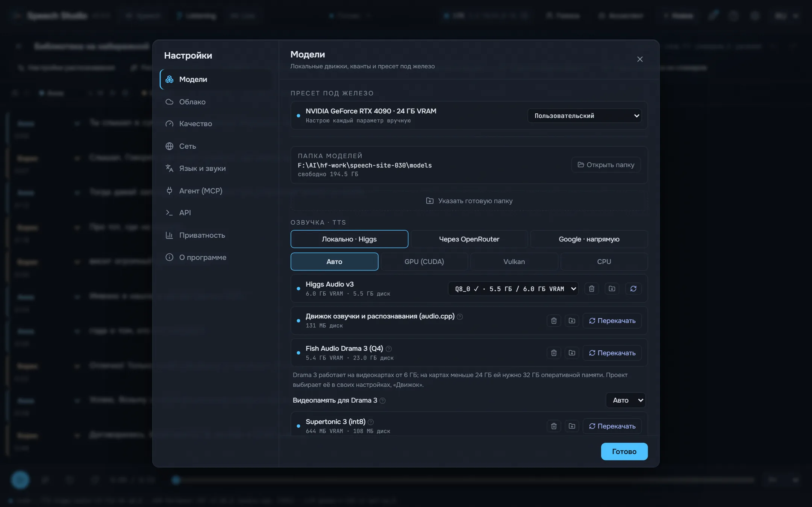
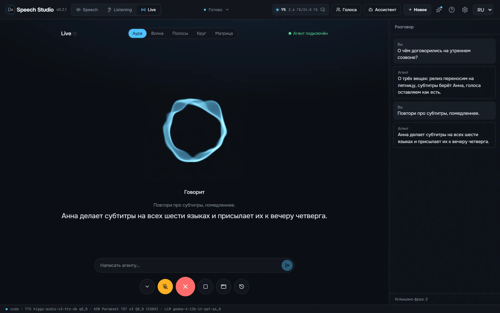
NVIDIA с 8 ГБ видеопамяти или больше. От Turing (GTX 16, RTX 20) с драйвером 580 движки идут на CUDA 13; GTX 900, GTX 10, Volta и драйверы 525–579 получают сборки CUDA 12. Drama 3 нужна CUDA 13, целиком она помещается в 24 ГБ; с 6 ГБ её эксперты живут в оперативной памяти, и тогда её нужно 32 ГБ. Карты AMD и Intel идут на сборках Vulkan, Mac — на Metal; это автор не проверял. На диске — около 9 ГБ под модели и движки по умолчанию.
Да. Студия бесплатная и с открытым кодом, модели скачиваются бесплатно прямо из неё.
Ваши тексты и записи — ваши, и они остаются на вашем диске.
Числа в нужном падеже и роде, даты, время, деньги и единицы пишутся словами до того, как движок их прочтёт. Ударения, «ё» и омографы расставляет RUAccent по предложению, сомнительные подсвечены, ваши знаки остаются.
Supertonic 3 и Qwen3-TTS ставят русские ударения наугад. Студия расставляет их до того, как текст попадёт в движок: RUAccent по предложению выбирает замо́к или за́мок, му́ки или муки́, а числа, даты и единицы пишет словами в нужном падеже.
Студия — MIT. Модели — нет: у каждой своя лицензия, они перечислены в README. Прочтите их, прежде чем публиковать или продавать озвученное. README
Пока студия открыта, агент вроде Claude Code или Cursor делает через MCP всё, что умеет окно: озвучивает текст в файл, правит проекты, раздаёт голоса, распознаёт и проверяет записи. Программы, написанные под голосовой API OpenAI, работают через его совместимый API.
claude mcp add --transport http speech-studio http://127.0.0.1:8797/mcp
Сервис вкомпилирован в десктопную программу и запускает Drama 3, Qwen3-TTS и transcribe.cpp в том же процессе через их C ABI; Higgs, Supertonic, CrisperWhisper и разделение говорящих работают в сервере audio.cpp рядом с ним. На CUDA, Vulkan или Metal. Ни одного процесса Python во время работы.
React UI ─┐
├─ Speech Studio.exe (Tauri window + Rust/axum speech-server)
Rust axum ┘ │
├─ Drama 3, Qwen3-TTS (C++/CUDA, GGUF)
├─ Parakeet, Nemotron 3.5 (transcribe.cpp, GGUF)
├─ RUAccent, DPDFNet (ONNX Runtime)
└─ audiocpp_server (Higgs Audio v3, Supertonic 3, CrisperWhisper, diarization)